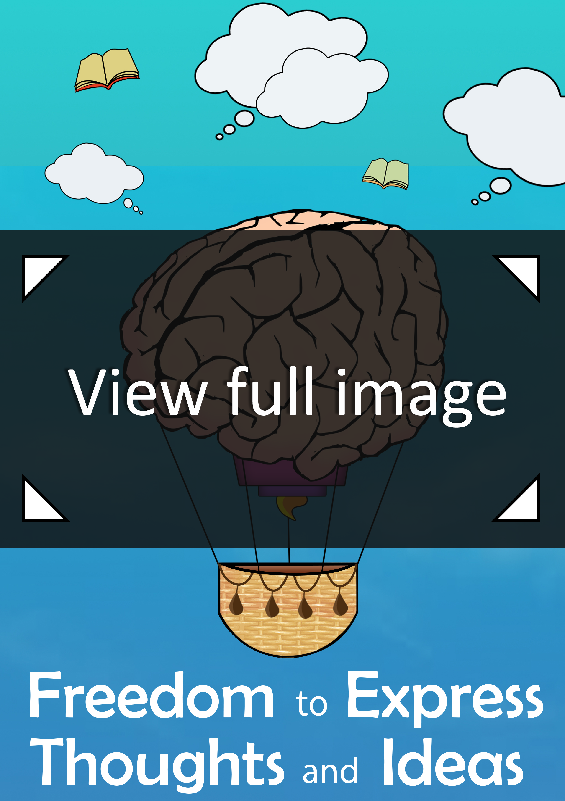
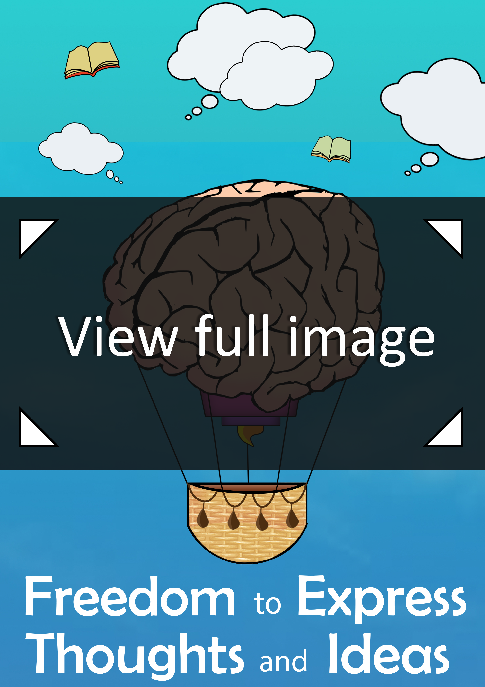
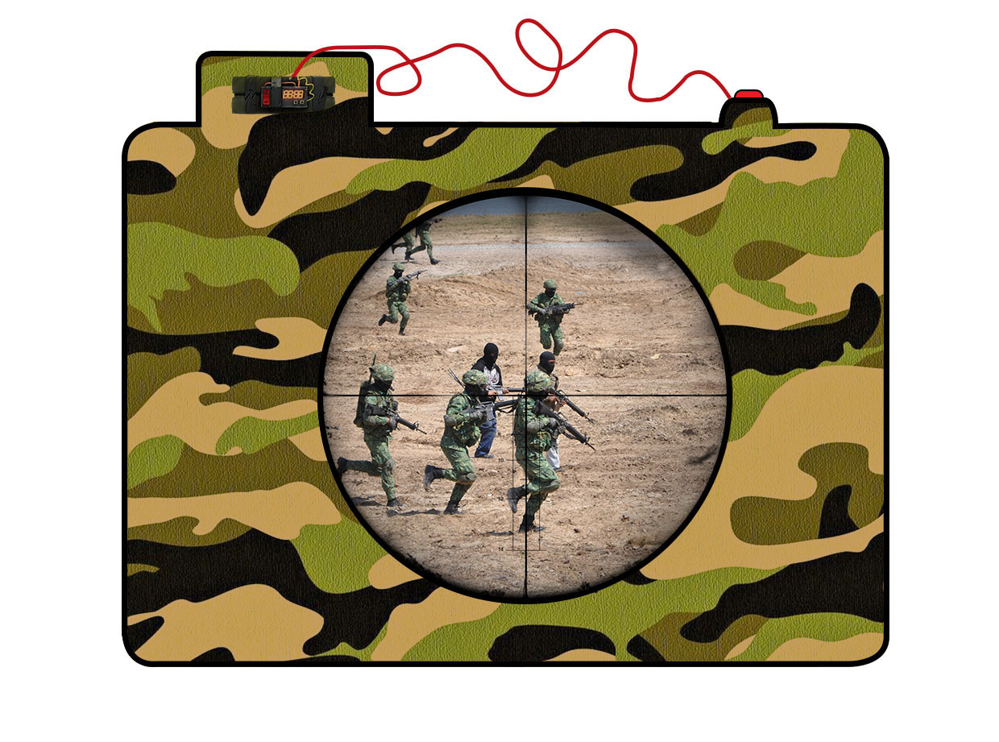

This postage stamp was based on my initial thoughts of college life. As I started getting assignments to do, I shortly realised how open they were to a wide range of thoughts and ideas. I enjoyed this aspect of college life because it allowed me to express creativity in my work.


As part of a college assignment we were asked to design 40 different designes of a camera using the same shape but with different styles.